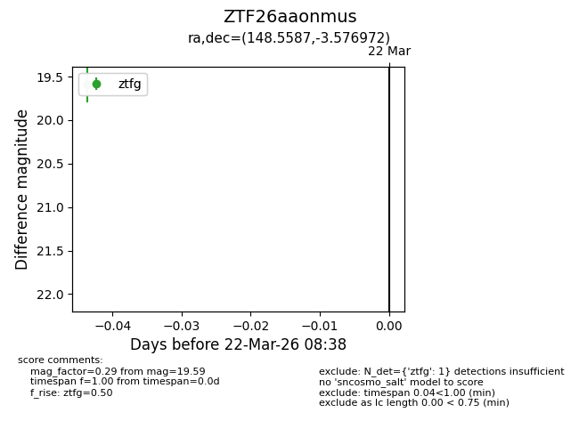
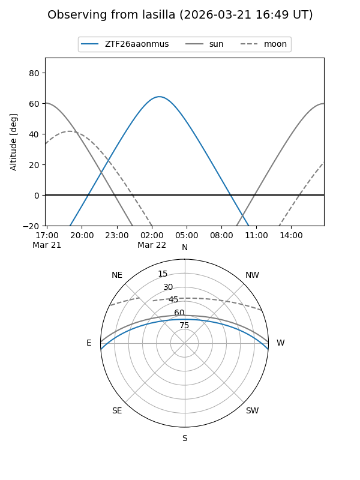
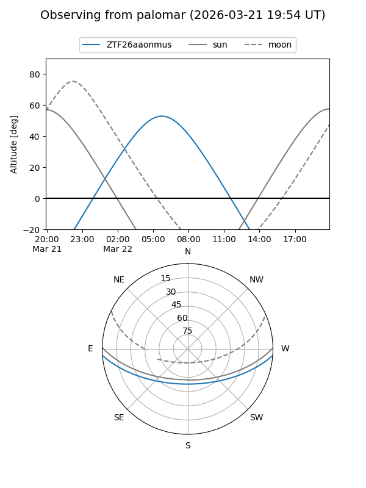

ZTF26aaonmus
Target ZTF26aaonmus at 2026-03-22 08:40
Aliases and brokers:
FINK: link
Lasair: link
ALeRCE: link
alt names
ZTF26aaonmus (ztf,fink_ztf)
Coordinates:
equatorial (ra, dec) = 148.5587,-3.57697
equatorial (HMS+DMS) = 09:54:14.08,-03:34:37.10
galactic (l, b) = (241.6065,+37.39164)
Flags:
Photometry:
last ztfg=19.59
1 ztfg detections
Lightcurve

Visibility


Additional plots